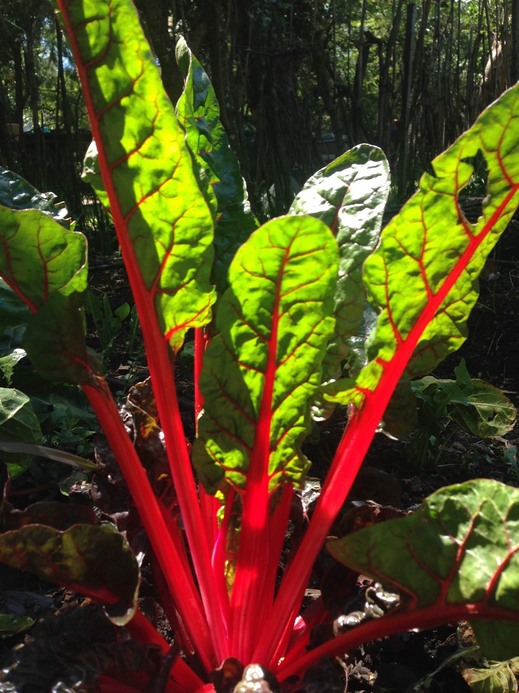
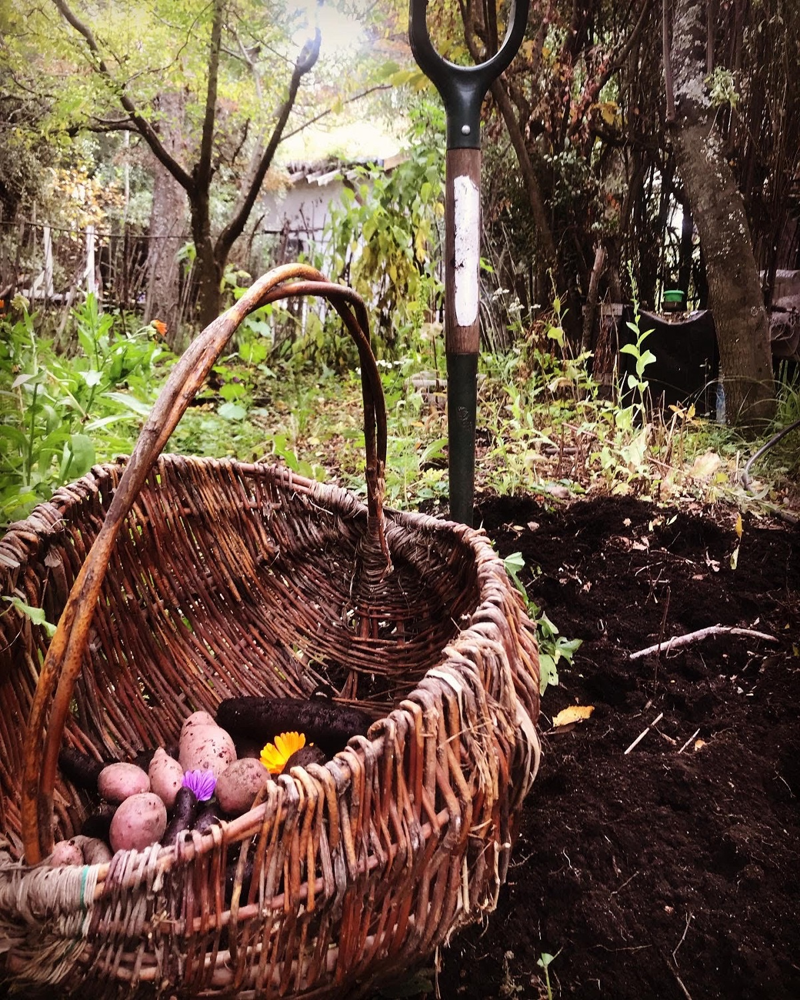
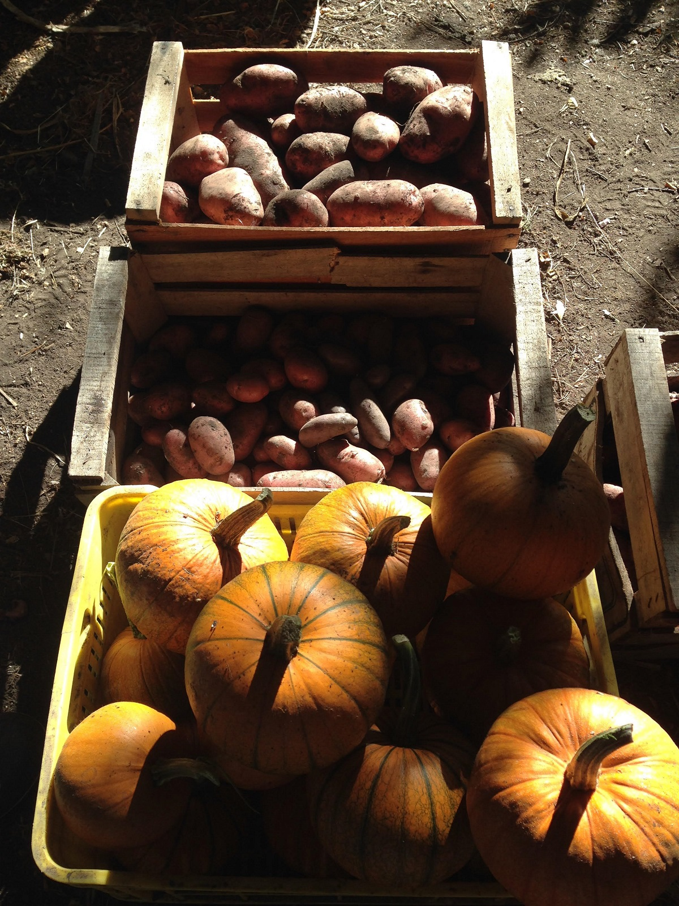
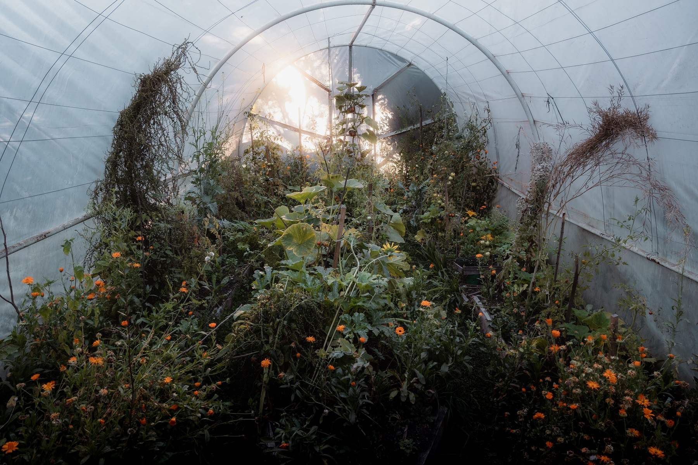
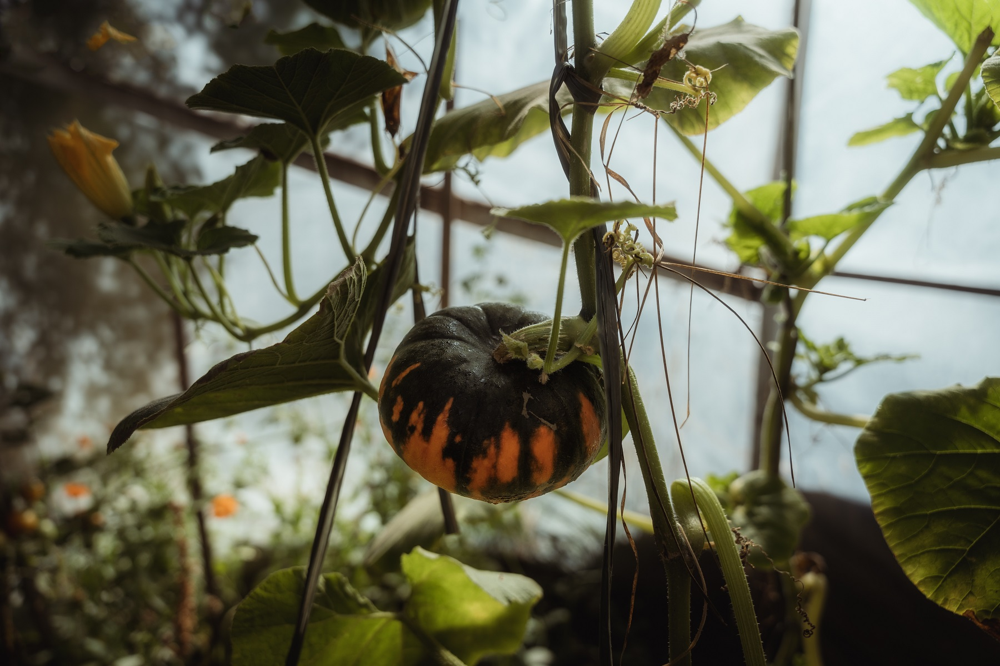
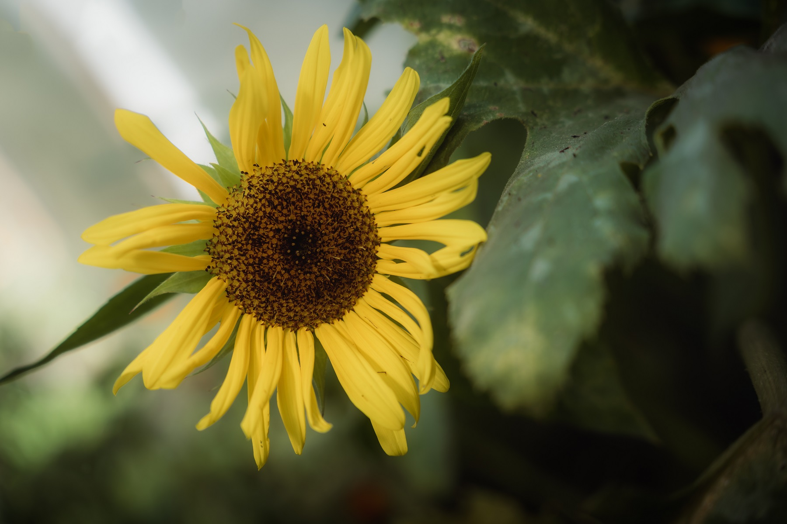

Cosecha de acelga
El verano si bien es un buen momento para cosechar tomates, zanahorias,entre una amplia variedad de verduras y hortalizas, proliferan las hojas verdes

Cosecha de tubérculos
Aparece la presencia de las grandes heladas.Tiempos de cacerola, guisos o comidas en estufa de leña.

Calabaza, Aduki, y más papas
Con la presencia del sol y la ayuda del invernadero aumenta la producción de alimentos de diferente tipo.
Articulación con Instituciones
Realizamos actividades con distintas instituciones de carácter público y privado orientadas a la investigación de diferentes temáticas que se desprenden de la producción hortícula tales como análisis del suelo, biodiversidad, entre otros
Nuestro enfoque va de la mano junto a la Agricultura Biodinámica


